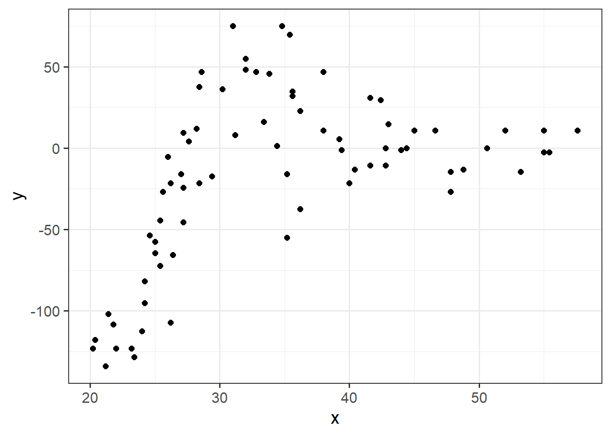
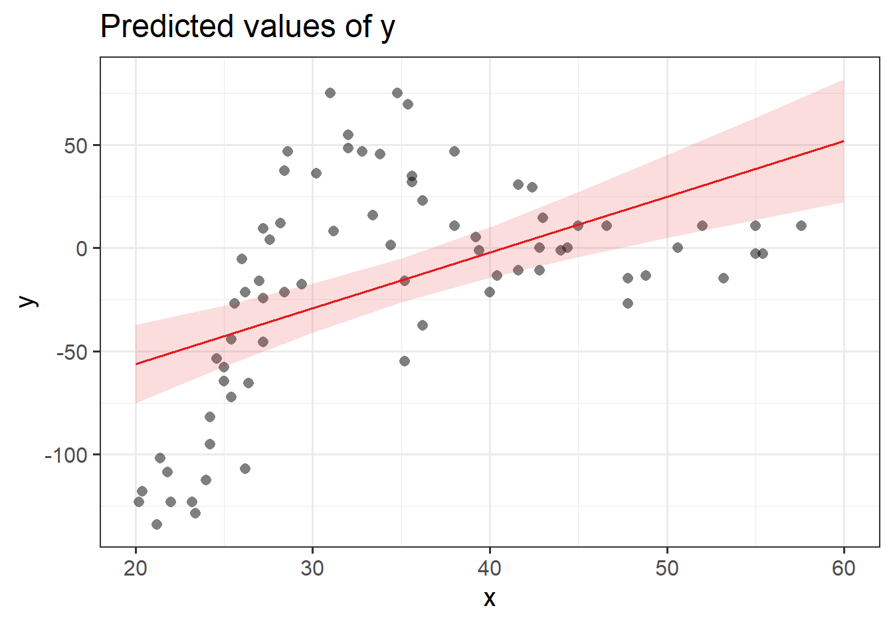
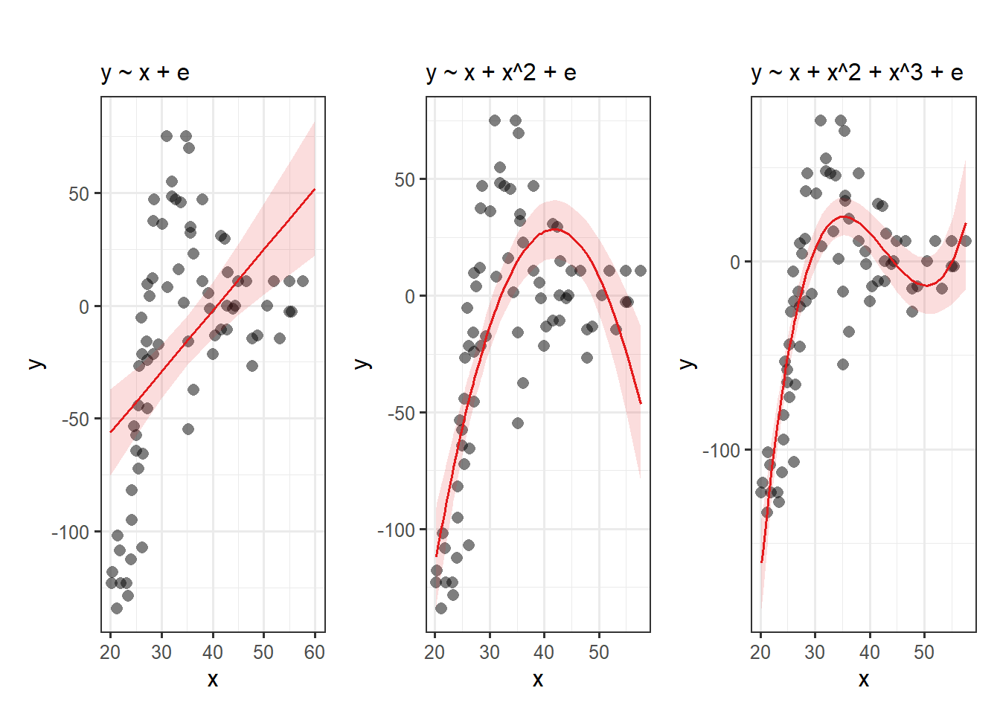
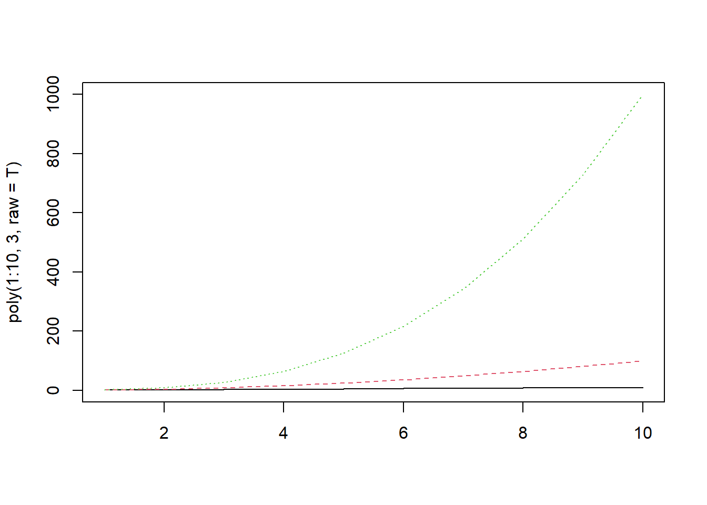
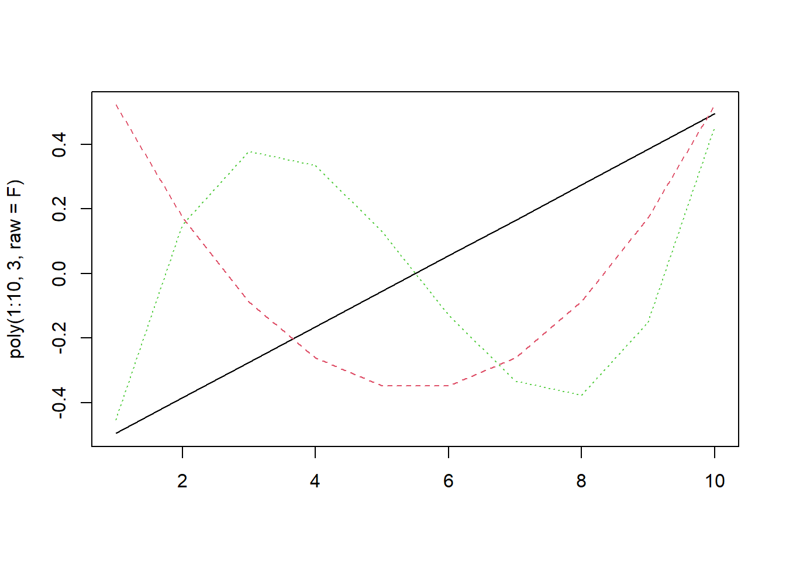

3A: Polynomial Growth
This reading:
We have already seen in the last couple of weeks that we can use MLM to study something ‘over the course of X’. In the novel word learning experiment from last week’s lab, we investigated the change in the probability of answering correctly over the course of the experimental blocks.
We’ve talked about how “longitudinal” is the term commonly used to refer to any data in which repeated measurements are taken over a continuous domain. This opens up the potential for observations to be unevenly spaced, or missing at certain points. It also, as will be the focus of this week, opens the door to thinking about how many effects of interest are likely to display non-linear patterns. These exercises focus on including higher-order polynomials in the multi-level model to capture non-linearity.
Linear vs Non-Linear
Suppose we had collected the data in Figure @ref(fig:mcycle), and we wanted to fit a model to predict \(y\) based on the values of \(x\).
Let’s use our old friend linear regression, \(y = \beta_0 + \beta_1(x) + \varepsilon\).
We’ll get out some estimated coefficients, some standard errors, and some p-values:
- The intercept:
\(\beta_0\) = -110.28, SE = 19.54, p < .001
- The estimated coefficient of x:
\(\beta_1\) = 2.71, SE = 0.55, p < .001
Job done? Clearly not - we need only overlay model upon raw data (Figure @ref(fig:mcycle3)) to see we are missing some key parts of the pattern.

Thoughts about Model + Error
All our work here is in aim of making models of the world.
- Models are just models. They are simplifications, and so they don’t perfectly fit to the observed world (indeed, how well a model fits to the world is often our metric for comparing models).
- \(y - \widehat{y}\). Our observed data minus our model predicted values (i.e. in linear regression our “residuals”) reflect everything that we don’t account for in our model
- In an ideal world, our model accounts for all the systematic relationships, and what is left over (our residuals) is just randomness. If our model is mis-specified, or misses out something systematic, then our residuals will reflect this.
- We check for this by examining how much like randomness the residuals appear to be (zero mean, normally distributed, constant variance, i.i.d (“independent and identically distributed”) - i.e., what gets referred to as the “assumptions”).
- We will never know whether our residuals contain only randomness, because we can never observe everything.
Let’s just do a quick plot(model) for some diagnostic plots of my linear model:
Does it look like the residuals are independently distributed? Not really. We need to find some way of incorporating the non-linear relationship between y and x into our model.
What is a polynomial?
Polynomials are mathematical expressions which involve a sum of powers. For instance:
- \(y = 4 + x + x^2\) is a second-order polynomial as the highest power of \(x\) that appears is \(x^2\)
- \(y = 9x + 2x^2 + 4x^3\) is a third-order polynomial as the highest power of \(x\) that appears is \(x^3\)
- \(y = x^6\) is a sixth-order polynomial as the highest power of \(x\) that appears is \(x^6\)
For our purposes, extending our model to include higher-order terms can fit non-linear relationships between two variables. For instance, fitting models with linear and quadratic terms (\(y_i\) = \(\beta_0 + \beta_1 x_{i} \ + \beta_2 x^2_i + \varepsilon_i\)) and extending these to cubic (\(y_i\) = \(\beta_0 + \beta_1 x_{i} \ + \beta_2 x^2_i + \beta_3 x^3_i + \varepsilon_i\)) (or beyond), may aid in modelling nonlinear patterns.

What are we interested in here?
As the order of polynomials increases, we tend to be less interested in these terms in our model. Linear change is the easiest to think about: are things going up over the course of \(x\), or down? (or neither?). Quadratic change is the next most interesting, and it may help to think of this as the “rate of change”. For instance, in the plot below, it is the quadratic term which differs between the two groups trajectories.

Raw Polynomials
There are two types of polynomial we can construct. “Raw” (or “Natural”) polynomials are the straightforward ones you might be expecting the table to the right to be filled with.
These are simply the original values of the x variable to the power of 2, 3 and so on.
We can quickly get these in R using the poly() function, with raw = TRUE.
If you want to create “raw” polynomials, make sure to specify raw = TRUE or you will not get what you want because the default behaviour is raw = FALSE.
| x | x^2 | x^3 |
|---|---|---|
| 1 | ? | ? |
| 2 | ? | ? |
| 3 | ? | ? |
| 4 | ? | ? |
| 5 | ? | ? |
| ... | ... | ... |
poly(1:10, degree = 3, raw=TRUE) 1 2 3
[1,] 1 1 1
[2,] 2 4 8
[3,] 3 9 27
[4,] 4 16 64
[5,] 5 25 125
[6,] 6 36 216
[7,] 7 49 343
[8,] 8 64 512
[9,] 9 81 729
[10,] 10 100 1000
attr(,"degree")
[1] 1 2 3
attr(,"class")
[1] "poly" "matrix"Raw polynomials are correlated
With raw (or “natural”) polynomials, the terms poly1, poly2 and poly3 are correlated.
Think think about why this might be - by definition, as \(x^1\) increases, so will \(x^2\), and so will \(x^3\) and so on.
We can visualise them:
matplot(poly(1:10, 3, raw=T), type="l")
And measure the correlation coefficients:
cor(poly(1:10, 3, raw=T)) %>% round(2) 1 2 3
1 1.00 0.97 0.93
2 0.97 1.00 0.99
3 0.93 0.99 1.00Why might this be a problem?
Well, this multicollinearity can lead to estimation problems, and means that our parameter estimates may change considerably depending upon what terms we include in our model, and it becomes more difficult to determine which ones are important, and what the effect sizes are.
Table @ref(tab:rawpolytab) below shows the coefficients for models fitted to a randomly generated dataset, with poly1, poly1+poly2, and poly1+poly2+poly3 as predictors (where poly1-poly3 are natural polynomials). Notice that they change with the addition of each term.
| term | y~poly1 | y~poly1+poly2 | y~poly1+poly2+poly3 |
|---|---|---|---|
| (Intercept) | 639.37 | -199.68 | -0.12 |
| poly1 | -144.01 | 275.52 | 98.52 |
| poly2 | - | -38.14 | 0.24 |
| poly3 | - | - | -2.33 |
Orthogonal Polynomials
“Orthogonal” polynomials are uncorrelated (hence the name). We can get these for \(x = 1,2,...,9,10\) using the following code:
poly(1:10, degree = 3, raw = FALSE) 1 2 3
[1,] -0.49543369 0.52223297 -0.4534252
[2,] -0.38533732 0.17407766 0.1511417
[3,] -0.27524094 -0.08703883 0.3778543
[4,] -0.16514456 -0.26111648 0.3346710
[5,] -0.05504819 -0.34815531 0.1295501
[6,] 0.05504819 -0.34815531 -0.1295501
[7,] 0.16514456 -0.26111648 -0.3346710
[8,] 0.27524094 -0.08703883 -0.3778543
[9,] 0.38533732 0.17407766 -0.1511417
[10,] 0.49543369 0.52223297 0.4534252
attr(,"coefs")
attr(,"coefs")$alpha
[1] 5.5 5.5 5.5
attr(,"coefs")$norm2
[1] 1.0 10.0 82.5 528.0 3088.8
attr(,"degree")
[1] 1 2 3
attr(,"class")
[1] "poly" "matrix"Notice that the first order term has been scaled, so instead of the values 1 to 10, we have values ranging from -0.5 to +0.5, centered on 0.
colMeans(poly(1:10, degree = 3, raw = FALSE)) %>%
round(2)1 2 3
0 0 0 As you can see from the output above, which computes the mean of each column, each predictor has mean 0, so they are mean-centred. This is a key fact and will affect the interpretation of our predictors later on.
Think about what this means for \(x^2\). It will be uncorrelated with \(x\) (because \(-0.5^2 = 0.5^2\))!
matplot(poly(1:10, 3, raw=F), type="l")
The correlations are zero!
cor(poly(1:10, 3, raw=F)) %>% round(2) 1 2 3
1 1 0 0
2 0 1 0
3 0 0 1We can then fit the same models y~poly1, y~poly1+poly2, and y~poly1+poly2+poly3 as predictors (where poly1-poly3 are now orthogonal polynomials), and see that estimated coefficients do not change between models:
| term | y~poly1 | y~poly1+poly2 | y~poly1+poly2+poly3 |
|---|---|---|---|
| (Intercept) | -152.66 | -152.66 | -152.66 |
| poly1 | -1307.99 | -1307.99 | -1307.99 |
| poly2 | - | -876.36 | -876.36 |
| poly3 | - | - | -129.26 |
Remember what zero is!
With orthogonal polynomials, you need to be careful about interpreting coefficients. For raw polynomials the intercept remains the y-intercept (i.e., where the line hits the y-axis). The higher order terms can then be thought of from that starting point - e.g., “where \(x\) is 2, \(\widehat{y}\) is \(\beta_0 + \beta_1 \cdot 2 + \beta_2 \cdot 2^2 + \beta_3 \cdot 2^3 ...\)”.
For orthogonal polynomials, the interpretation becomes more tricky. The intercept is the overall average of y, the linear predictor is the linear change pivoting around the mean of \(x\) (rather than \(x = 0\)), the quadratic term corresponds to the steepness of the quadratic curvature (“how curvy is it?”), the cubic term to the steepness at the inflection points (“how wiggly is it?”), and so on.
Some useful code from Dan
It’s possible to use poly() internally in fitting our linear model, if we want:
lm(y ~ poly(x, 3, raw = T), data = df)
Unfortunately, the coefficients will end up having long messy names poly(x, 3, raw = T)[1], poly(x, 3, raw = T)[2] etc.
It is probably nicer if we add the polynomials to our data itself. As it happens, Dan has provided a nice little function which attaches these as columns to our data, naming them poly1, poly2, etc.
# import Dan's code and make it available in our own R session
# you must do this in every script you want to use this function
source("https://uoepsy.github.io/msmr/functions/code_poly.R")
mydata <- code_poly(df = mydata, predictor = 'time', poly.order = 3,
orthogonal = FALSE, draw.poly = FALSE)
head(mydata)# A tibble: 6 × 6
time y time.Index poly1 poly2 poly3
<int> <dbl> <dbl> <dbl> <dbl> <dbl>
1 1 96.8 1 1 1 1
2 2 179. 2 2 4 8
3 3 234. 3 3 9 27
4 4 248. 4 4 16 64
5 5 209. 5 5 25 125
6 6 97.2 6 6 36 216Both will produce the same model output (but Dan’s method produces these nice neat names for the coefficients!), and we can just put the terms into our model directly as lm(y ~ poly1 + poly2 + poly3, data = mydata).